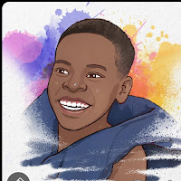

Building practical solutions through creativity and technology

I am someone who enjoys building, fixing, and improving things. I learn by doing and focus on creating simple, practical solutions that actually work in real life.
I create simple websites that are easy to understand and use, even for people without technical backgrounds.
I enjoy identifying problems and finding clear, practical solutions instead of overcomplicating things.
I am always learning new skills and improving what I already know to deliver better results over time.
Email: ethanamanyarwakinanga@gmail.com
Phone: +256 772 321 184
Instagram: @mrr4ks